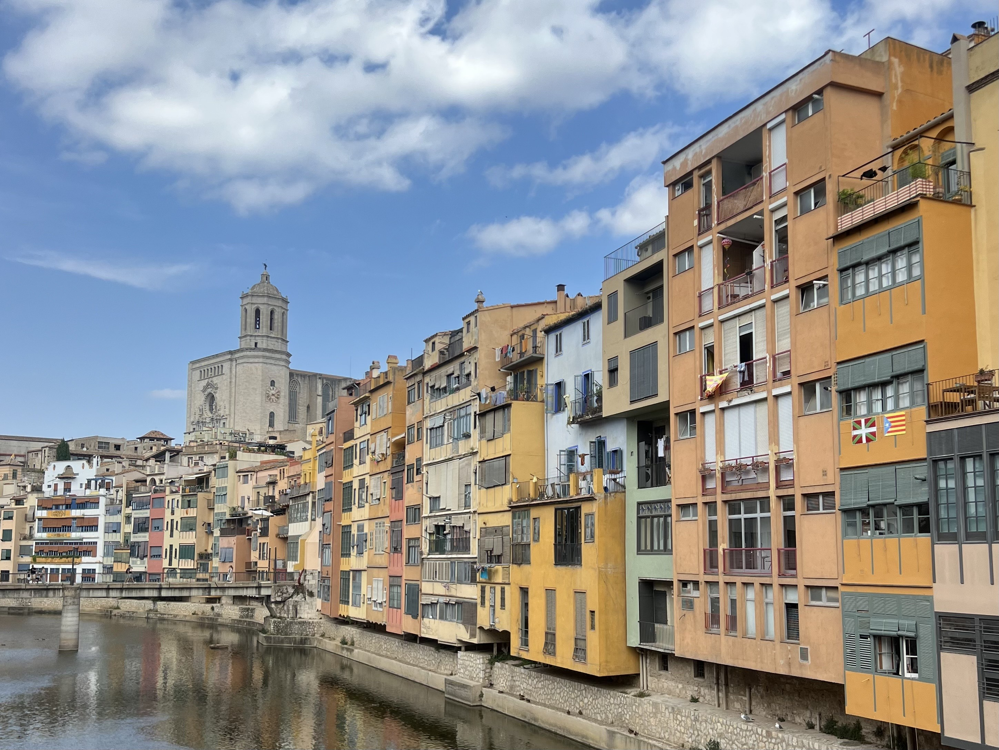

À
Propos
Actuellement en deuxième année de BUT TC,
Je prépare mon départ pour mon semestre 5 à l'étranger...
Deux réorientations
BUT TCAprès deux réorientations dans le domaine scientifique, j'ai trouvé un domaine d'étude dans lequel je m'épanouie et souhaite continuer.
Job EXTRA
AutogrillEn parrallèle de mes études, j'occupe le poste d'employée polyvalente de restauration en contrat EXTRA. Je travaille durant les week-ends et les vacances scolaires.
Spécialité digitale
Marketing digitalJ'ai choisi le parcours Marketing Digital, E-business et Entreprenariat pour la suite de mes études, dans lequel j'étudie depuis le début de l'année. J'aime l'aspect création digitale, et concret de cette formation.
Mes aptitudes
Expérience acquiseDe par mon cursus scolaire et mes diverses expériences professionnelles depuis l'âge de mes 16 ans, j'ai pu acquérire diverses aptitudes. J'ai su développer mon sens de la rigueur, de l'autonomie, de la réactivité, et tout cela en gardant un esprit d'équipe et de collaboration essentiel.
Mes compétences
CapacitésJ'ai eu l'occasion d'obtenir mon PSC1 (premier secours). D'un point de vue informatique, je maîtrise les applications de la suite office et dispose de 482 PIX certifiés. Mon niveau C1 en ANglais me permet de tenir une conversation notemment lors d'un échange avec un client.
Ce qui me motive
MotivationsDans la vie de tous les jours, j'aime être curieuse et apprendre de nouvelles choses / manière de voir les choses. C'est une des raisons pour laquelle ma formation actuelle me correspond.
Mon
Portfolio
Le BUT TC permet d'effectuer un tas de projets pratiques, m'aidant ainsi
à prendre en main divers logiciels.
Voici quelques uns que j'utilise (cliquez pour voir apparaître le projet associé) :
{kind=link}
Canva est devenu mon outil incontournable pour créer des visuels impactants, que ce soit pour mes projets en marketing digital ou des présentations académiques. J’aime sa simplicité d’utilisation et la richesse de ses modèles, qui stimulent ma créativité tout en me faisant gagner du temps.
Voici ci-dessus un exemple d'une plaquette commerciale que j'ai réalisé sur Canva.
{kind=link}
{kind=link}
{kind=link}
{kind=link}
Mon Projet Professionnel
ERASMUS Semestre 5 & Master à l'IAE
Mon projet professionnel consiste à partir en Erasmus en Irlande à la rentrée prochaine pour enrichir mes compétences en marketing, avant d’intégrer un master en e-marketing à l’IAE de Montpellier. Cette expérience internationale et académique me permettra de me préparer aux défis du marketing digital à l’échelle mondiale.
En ce qui concerne cette année scolaire, je suis activement à la recherche d'un stage dans le domaine de la communication commerciale sur la période avri/mai 2025.
J'aimerai pouvoir y réaliser des missions axées sur le digital, spécialitée sur laquelle je me suis positionnée.
Centres
D'intérêt
Pour en savoir un peu plus sur moi
Passe-temps, voyages, expériences pro...
-
Tossa De Mar
EspagneJ'ai découvert cette petite ville d'Espagne cet été, j'ai pu découvrir de magnifiques paysages de bord de mer, avec des vues incroyables depusi les falaises.
-
Oslo
NorvègeCe voyage me tient particulièrement à coeur car c'est le premier que j'ai pu financer par mes propres moyens. J'y ai découverts des paysages enneigés à couper le souffle et une culture assez différente de la notre.
-
Versailles
FranceJ'ai récemment découvert (pour la première fois) Versailles et son chateau. Les architectures de la ville sont somptueuses et j'ai pu découvrir un aspect majesteux de la France.
-
Randonnée
Bivouac, treks, balade...Un de mes passe-temps favoris, j'aime passer du temps dans la nature, marcher, camper. Cela permet la plupart du temps de découvrir de magnifiques paysages qu'on ne soupsonnait pas si proche de nous.
-

Visites
DécouverteCe loisir rejoint mon attrait pour les voyages. J'aime découvrir de nouvelles cultures, stimuler ma curiosité en visitant toute sorte de lieux/pays...
-
Lecture
RomansRomance, Aventure, Policiers... La lecture est un moyen pour moi de me libérer l'esprit, tout en développant ma curiosité et ma concentration (dautant plus pour les livres en Anglais).
-
Autogrill
Aire de Béziers MontblancDepuis mes 16 ans, j'effectue des contrats saisonniers chez Autogrill en tant qu'employée polyvalente de restauration. J'y effectue également des contrats EXTRA depusi mes études supérieures lors des week-ends et vacances scolaires.
-
Pignol
LyonJ'ai eu l'occasion de travailler durant tout un mois de décembre en tant que vendeuse polyvalente dans ce prestigieux traiteur de Lyon. J'ai pu profiter de l'ambiance de Noël au côté de toute l'équipe.
-
Mairie de Narbonne
NarbonneJ'ai occupé le poste d'agent d'accueil et de surveillance au sein du palais des archevêques géré par la mairie de Narbonne. J'ai travaillé durant deux mois dans ces musées renommés.
-
Equitation
10 ansPlus qu'un sport, c'est une passion que j'ai pratiqué pendant plus de 10ans. J’adore la sensation de liberté que procure une balade, mais aussi la rigueur des entraînements, qui m’ont aidée à développer ma persévérance et ma capacité à relever des défis.
-
Ski
HiverPour moi, le ski combine parfaitement aventure, détente et découverte, et chaque session sur les pistes est une parenthèse pour me ressourcer et m’amuser.
-
Musculation
Fitness, Cardio, Muscu...Quand j’ai le temps entre mes cours, j’aime aller à la salle de sport pour me détendre, C’est un moment où je peux me concentrer sur moi-même, déconnecter et me défouler.
Me
Contacter
Pour toute question ou précision,
Je reste à votre disponibilité.